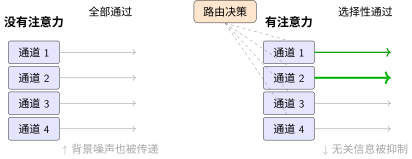
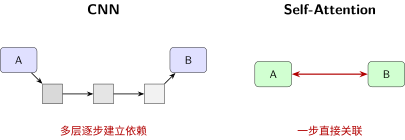

操控注意力与长程依赖：信息该走哪条路#
CNN 中的注意力机制 详细介绍了 SE-Net 和 CBAM 的具体实现。现在我们从设计心法的角度来理解——注意力不是一种"技巧"，而是神经网络中信息路由的通用机制。
重新理解注意力：从"模块"到"路由"#
卷积神经网络 告诉我们卷积有 归纳偏置（Inductive Bias）——平移等变性、局部感受野。这些归纳偏置让 CNN 很高效，但也带来了一个代价：所有输入位置被同等对待。
池化后，所有特征不管来自背景还是关键目标，都一视同仁地进入下一层。这就像高速公路所有车道的通行权一样——效率高，但不合理。
注意力的作用是：在信息通路上设置红绿灯，动态控制每个通道、每个位置的通行权。

三种注意力，三种路由策略#
从路由的角度，注意力分为三个层次：
层次 |
路由问题 |
典型实现 |
信息论解释 |
|---|---|---|---|
通道注意力 |
哪个特征重要？ |
SE-Net、ECA-Net |
在通道间分配信息权重 |
空间注意力 |
哪里重要？ |
CBAM 空间分支 |
在空间位置间分配信息权重 |
长程依赖 |
远处和近处能关联上吗？ |
Self-Attention、Non-local |
全局信息路由，破除距离限制 |
通道注意力——分配"什么"#
通道注意力回答：这 256 个特征通道中，哪些对当前任务更重要？
通道注意力：SE-Net 详细介绍了 SE-Net 的三步机制（压缩→激励→缩放）。从架构设计角度，通道注意力的核心价值在于：用极小的额外代价（<3% 参数），实现全局上下文对局部特征的动态调控。
架构层面的关键决策#
在将 SE-Net 集成到你的网络时，需要考虑：
决策点 |
选项 |
影响 |
建议 |
|---|---|---|---|
降维比例 \(r\) |
4/8/16/32 |
参数量 vs 表达能力 |
通常 16 是 sweet spot，轻量网络可用 32 |
插入位置 |
每个卷积后 / 仅深层 |
计算代价 vs 效果 |
只在深层（分辨率低）插入，节省计算 |
与残差连接的关系 |
残差内 / 残差外 |
梯度流动 |
建议放残差内（如 SE-ResNet），与跳跃连接协同 |
设计心法#
通道注意力的本质是一个轻量化的信息路由决策器：
输入：所有通道的全局统计信息（通过 Squeeze 获得）
决策：学习通道间的重要性关系（通过 Excitation 实现）
输出：动态调节各通道的信息流（通过 Reweight 执行）
这种"全局指导局部"的机制，让网络学会了根据输入内容自适应地重新分配计算资源——重要的特征被放大，无关的特征被抑制。
空间注意力——分配"哪里"#
空间注意力回答：图像中哪些位置更重要？看背景还是看目标？
通道+空间注意力：CBAM 展示了如何用通道压缩和 7×7 卷积生成空间注意力图。
长程依赖——破除距离的限制#
这是传统 CNN 最微妙却最根本的一个局限。
问题：图像中两个相距较远的区域需要关联——比如篮球运动员的手和篮筐。卷积能看到吗？
答案：理论上能，但代价很大。
CNN 的感受野随深度线性增长。要让两个相距 100 像素的区域产生关联，需要堆很多层。而在层层传递中，远距离的关联信息很容易丢失。

Self-Attention 的方案：不管位置多远，直接计算关联。这彻底绕过了卷积的层层传递。
架构层面的权衡#
Self-Attention 的核心机制是 Query-Key-Value 计算（详见 Transformer 相关章节，正在画饼）：每个位置通过可学习的投影生成 Q/K/V，通过 \(QK^T\) 计算相似度，再对 V 加权求和。从架构设计角度，关键是理解它的能力-代价权衡：
维度 |
卷积 |
Self-Attention |
影响 |
|---|---|---|---|
感受野 |
局部（随深度增长） |
全局（一步到达） |
远距离依赖建模能力 |
计算复杂度 |
\(O(N \cdot C \cdot k^2)\) |
\(O(N^2 \cdot d_k)\) |
图像尺寸平方增长 vs 线性增长 |
归纳偏置 |
强（平移等变性） |
弱（需从头学习位置关系） |
数据效率 vs 灵活性 |
并行性 |
高 |
极高（矩阵运算） |
硬件友好度 |
关键洞察：对于 \(H \times W\) 的特征图，Self-Attention 的 \(N^2 = (H \times W)^2\) 复杂度意味着：
224×224 输入：\(N^2 \approx 2.5 \times 10^9\) —— 不可行
14×14 特征图：\(N^2 = 38,416\) —— 可行
因此 Self-Attention 在 CNN 中通常只用于深层低分辨率特征。
设计心法：何时使用 Self-Attention#
推荐使用场景：
需要捕捉长距离依赖（如视频中的跨帧关联）
空间分辨率已经较低（如 14×14 的特征图）
计算资源充足，追求最佳性能
不推荐场景：
高分辨率输入（如 224×224 原始图像）
实时应用（如移动端实时检测）
简单任务（如 MNIST 分类）
缓解高复杂度的策略：
限制感受野：局部窗口注意力（如 7×7 邻域）
下采样后再计算：只在低分辨率特征图上使用
稀疏注意力：只计算特定模式（如轴向注意力）
什么时候需要长程依赖#
场景 |
是否需要长程依赖 |
原因 |
|---|---|---|
分类猫 vs 狗 |
不太需要 |
局部特征（耳朵、鼻子）已足够 |
场景理解 |
中等需要 |
需要关联天空（上）和草地（下） |
目标检测 |
需要 |
关联物体的不同部分 |
语义分割 |
非常需要 |
像素级一致性需要全局上下文 |
视频理解 |
必须 |
跨帧关联 |
设计心法
判断是否需要长程依赖的方法：问自己——“这张图里，一个像素的类别是否依赖于远处的像素？”
如果每一小块都能独立判断 → 不需要
如果需要全局结构推理 → 需要
注意力的代价#
注意力不是免费午餐：
注意力类型 |
计算复杂度 |
显存 |
何时用 |
|---|---|---|---|
通道注意力 |
\(O(C^2)\)——很小 |
几乎不增加 |
默认推荐，几乎所有模型 |
空间注意力 |
\(O(k^2 \cdot H \cdot W)\)——中等 |
略增加 |
目标检测、分割 |
自注意力/Non-local |
\(O(C \cdot H^2 \cdot W^2)\)——极大 |
显著增加 |
长程依赖必不可少时 |
全局池化 attention |
\(O(C)\)——极小 |
忽略不计 |
轻量级通道注意力 |
失败案例：注意力的误用#
案例一：MNIST 上加 SE 模块#
场景：MNIST 分类网络（3 层 CNN），你在每层后加了 SE 通道注意力模块。
结果：
参数量从 50K 增加到 65K（+30%）
准确率从 99.1% 提升到 99.15%（几乎无提升）
训练时间增加 20%
为什么失败：
MNIST 是灰度图，只有 1 个输入通道，特征通道本身也很少（8-16 通道）
SE 模块学习"哪个通道重要"，但通道数太少，选择空间有限
任务太简单，没有复杂特征需要筛选
教训：注意力解决的是"选择困难"，不是"能力不够"。如果 baseline 本身就能很好地完成任务，注意力只是徒增计算。
案例二：高分辨率特征图用 Self-Attention#
场景：目标检测网络中，你在 \(56\times56\) 分辨率的特征图上用了标准的 Non-local Self-Attention。
结果：
训练 batch size 从 8 降到 2（显存不足）
推理一张图从 50ms 变成 500ms
mAP 提升 0.3%（几乎不可感知）
为什么失败：
Self-Attention 复杂度是 \(O(H^2 \times W^2 \times C)\)，对于 \(56\times56\) 就是 \(56^4 \approx 1000\) 万的计算量
高分辨率时空间像素太多，全局关联的计算成本爆炸
大多数关联是局部的，全局计算是浪费
教训：Self-Attention 只适用于低分辨率特征图（\(\leq 14\times14\)）。高分辨率请用局部窗口注意力或直接不用。
案例三：所有层都加注意力#
场景：你在 ResNet-50 的每一层（包括浅层的 \(56\times56\) 和 \(28\times28\)）都加了 CBAM（通道+空间注意力）。
结果：
训练不稳定，loss 震荡
最终准确率比不加注意力还低 1%
为什么失败：
浅层特征（边缘、纹理）本身就很基础，不需要复杂的注意力筛选
过早的注意力会抑制低级特征的提取
深层才需要注意力来筛选高级语义
教训：注意力应该加在深层，不是每一层。通常只在最后 1-2 个 stage（分辨率最低的部分）添加。
案例四：注意力权重全部趋于相同#
场景：你训练了一个带 SE 模块的网络，但发现所有样本的 attention weight 都差不多（接近均匀分布）。
结果：
SE 模块没有起到筛选作用
相当于加了一层无用的全连接
为什么失败：
可能是学习率太小，注意力没有被充分训练
可能是任务本身不需要通道筛选（如单通道输入的任务）
可能是 squeeze 操作的池化方式不对（全局平均池化丢失了重要信息）
教训：注意力需要被"训练出来"。如果权重趋于均匀，说明要么超参不对，要么任务本身不适合。
决策树：注意力使用指南#
网络深度?
├── 浅层（分辨率 ≥ 56×56）
│ └── 不加注意力！提取基础特征即可
│
└── 深层（分辨率 ≤ 14×14）
├── 需要通道筛选? → SE-Net / ECA
├── 需要空间定位? → CBAM 空间分支
├── 需要长程依赖? → Self-Attention（但注意计算量）
└── 资源紧张? → 全局平均池化注意力
核心原则：
注意力是高级认知功能，浅层不需要
通道注意力几乎是"免费"的，可以默认加上
空间注意力和自注意力有显著代价，只在必要时使用
信息论视角：注意力 = 最大化任务相关互信息#
从信息论来看，注意力解决的是 改造的本质：从"会用 CNN"到"会设计 CNN" 中讨论的容量vs信息流之外的第三个维度：相关性。
网络既要有足够容量（感受野）、信息要能流动（连接），还要懂得区分有用信息和噪声。
通道注意力在通道维度做信息选择，空间注意力在空间维度做信息选择，而长程依赖确保信息不因距离而丢失。
三种注意力协同工作，最大化的是任务相关的互信息 \(I(X;Y_{\text{task}})\)——不是保留所有信息，而是保留任务需要的信息。
下一步#
注意力是效果优化的最后一个维度。但有时候你的瓶颈不是效果，而是速度——模型训练太慢、推理太慢、参数量爆炸。
这时候需要操纵的是效率，而不是注意力。下一节操控效率：如何在效果与速度间权衡我们将学习如何在不显著牺牲效果的前提下，让模型更快。
贡献者与修订历史
查看详细修订记录
-
15d1b152026-05-03 - Heyan Zhu: docs(model-architecture-design): add new chapter on CNN architecture design methodology